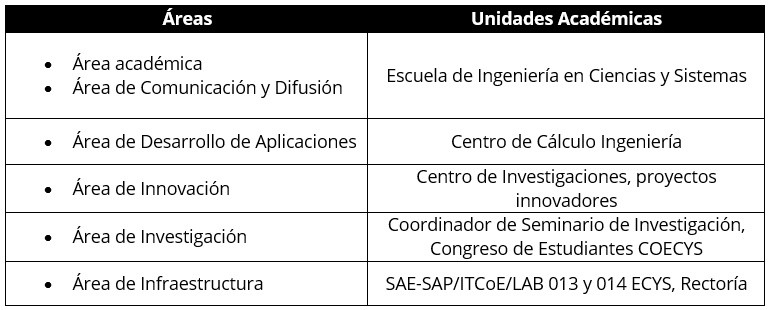
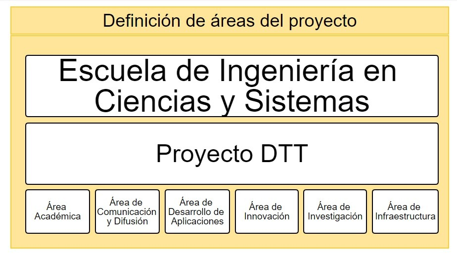

Artículo 10 ¿Qué es el DTT?
El proyecto DTT es el vínculo entre los estudiantes de la Escuela de Ingeniería en Ciencias y Sistemas de la Facultad de Ingeniería de la Universidad de San Carlos de Guatemala que realizan su Práctica Final con el mundo laboral, la investigación, el emprendimiento y el estado.
Este vínculo permite que los estudiantes universitarios conozcan características del mercado laboral y las necesidades tecnológicas en Guatemala, además, crea un canal de comunicación para dar a conocer y difundir las investigaciones y proyectos innovadores desarrollados en la Escuela de Ingeniería en Ciencias y Sistemas, por medio de la publicación en la página web y en la cuenta de Facebook destinados para este proyecto de artículos realizados por los estudiantes.
El proyecto DTT también permitirá fortalecer el vínculo entre las autoridades de la Escuela de Ingeniería en Ciencias y Sistemas con los docentes, los estudiantes de práctica final, los estudiantes de práctica intermedia y las distintas unidades de investigación y desarrollo de la Facultad de Ingeniería.
Funciones
- Asegurar el proceso de control y seguimiento de actividades de práctica final de los estudiantes de la carrera de Ingeniería en Ciencias y Sistemas.
- Promover el desarrollo y trasferencia tecnológica a través de las diferentes áreas del Proyecto DTT.
- Asegurar una comunicación directa entre dirección de ECYS, docente, practicante y estudiante de los diferentes cursos de la carrera de Sistemas.
- Apoyar a las diferentes áreas o unidades académicas de la Universidad de San Carlos de Guatemala, en temas relacionados a tecnología (desarrollo de aplicaciones, soporte tecnológico e investigación).
- Asegurar que la dirección de la ECYS obtenga la información del proceso de práctica final en forma oportuna y veraz.
- Realizar evaluación a las personas de los diferentes roles (tutores DTT, administrador DTT y director de ECYS) por medio de la plataforma (Evaluación 360).
- Fomentar la participación de profesionales y/o personas especializadas como conferencistas de temas tecnológicos, conferencias, organizadas por los practicantes del Proyecto DTT del área académica.
- Apoyar por medio de todos los practicantes del Proyecto DTT, con la elaboración de artículos como materia prima para la creación de la revista Digital de la ECYS y recibir dichos artículos por medio del Sistema DTT.
Objetivo
Crear una figura para administrar las prácticas finales de la Escuela de Ingeniería en Ciencias y Sistemas de tal forma que los estudiantes que participen puedan incorporarse en las siguientes áreas:
- Área académica (Tutores de cursos de la ECYS).
- Área de investigación (Coecys)
- Área de comunicación (Escuela de Sistemas - Revista Digital).
- Área de Desarrollo (Centro de cálculo).
- Área de Innovación (Proyectos Innovadores).
- Área de Infraestructura (Saesap, ITCOe, Proyecto Rectoría).
Relación Proyecto DTT con unidades académicas de la Facultad de Ingeniería

